9. Living
9.1 Container Apartments
In Chapter 2.5, we noted that the goal of these futurities is to help people find their way in a world that is changing ever faster. Part of that is making it easier for them to change something when it becomes necessary.
One thing that currently takes an enormous amount of time and money to change is where you live. It’s a huge effort: traveling to the new place for apartment viewings, packing everything into boxes before the move, taking large furniture apart, having friends or a moving company load everything into a truck, and then—once you arrive—carrying it all into the new apartment. After that, it still takes a lot of time to reassemble the furniture and unpack the boxes. Even that still doesn’t cover all the downsides of moving: A lot will get lost or damaged. People sometimes joke that moving three times is like a house fire.
In earlier times, when it was completely normal to live in the same place your whole life, this wasn’t a big issue. There was usually just one move: out of your parents’ home, to start your own family.
Today things look very different. The first move is out of your parents’ home for college, vocational training, or a year of service. After that, you move again to start your first job. Often you have to move when you switch jobs, or when something about your relationship status changes. So the high cost and effort of moving comes up far more often now—and there’s no reason to expect it will become rarer in the future.
I have an intriguing idea for handling relocations in a fundamentally different way.
With the capsulenet, I already showed how a system with standardized sizes (supported everywhere by matching infrastructure) can be far more efficient than custom sizes for each individual shipment (classic parcel services).
Freight transport has already recognized this and implemented it worldwide. Shipping containers have largely replaced sending individually packaged freight. Ports, trucks, and rail cars—everything is designed around the standardized dimensions of container sizes.
Various companies already offer living space you can buy in the form factor of a container.[46] Either because it’s only needed temporarily (construction workers), or because it’s especially inexpensive.
Of the different standardized container sizes, the “40 Foot High Cube” is the best suited for living space. Its external dimensions (L×W×H) are 12.2m × 2.4m × 2.9m.75[47]
I want to show here what would be possible—compared to today’s isolated one-off solutions—if there were a standard for container apartments that goes beyond the mere form factor.
What exactly are the advantages that the form factor already brings on its own? Why do apartments in container-format already exist today?
• The apartment can be manufactured in a factory instead of being built where it will later stand. That’s much cheaper, and it opens up new possibilities for how apartments can be designed.
• Even afterward, the entire apartment can be moved as one by truck, rail, or ship. No packing boxes or taking furniture apart required!
What additional advantages become possible if you create a standard for container apartments and design buildings into which these standardized apartments can be inserted like building blocks?
• The container apartment can use the building’s water and power connections and, thanks to standardization, be connected easily.
• The container apartment can benefit from the building’s insulation, saving space and cost inside the container.
• It is clear that the container apartment will fit into the building. In many cases, a viewing appointment before moving becomes unnecessary. That’s a major advantage especially for long-distance moves.
• The landlord takes on much less risk, because the tenant brings their apartment with them. Renting a spot for a container will be easier than renting an apartment today.
• Switching containers is possible by temporarily placing the old and new containers on the same floor in the same building. Moving into that neighboring apartment is far simpler and less stressful than a traditional move.
Something that is inevitably lost with standardization is individuality. Many people would own similar or even identical apartments, whereas today almost every apartment is unique. But if the apartment is better and cheaper in return, most people would have no problem with that. Clothing used to be made by hand as well. Every piece was one of a kind—but it was also many times more expensive. Even though everyone still has the option today to make individual pieces of clothing themselves, very few people actually do.
For expensive things that are meant to serve a function in people’s lives, mass production in a factory is far superior to custom-made craftsmanship. That applies to a knife just as much as to a smartphone or a car. Anyone with a lot of money who wants to spend it on something unique can, of course, always do so. But it should always be a voluntary decision to spend more money—not a requirement because mass production for that item doesn’t exist.
I hope that answers the question of whether mass-producing apartments would be a good idea. The harder question, of course, is whether good apartments are even feasible in this format. The reason there have only been freestanding container apartments so far is that only then can you have windows facing multiple directions. If you instead slide container apartments into a building like Jenga blocks, there’s only a window on one narrow side of the container. Won’t that be far too dark? On top of that, a container with a footprint of 12.2m×2.4m is a pretty long, narrow tube. Is a sensible floor plan even possible within that?
To answer these questions, I designed an apartment in container format, which we’ll look at in a moment. Subtracting the exterior walls, a container has internal dimensions of 11.7m×2.3m, about 27m². Which is just enough for a small one-person apartment. After that, we’ll look at an apartment made from two containers side by side. But first, let’s start with the hardest task: achieving something in just 27m² in a long, narrow shape.
Height allocation: The clear height of the rooms is 250cm. The remaining 39cm of the container height (2.9m) are allocated as follows:
• 6cm each for the floor and ceiling
• 23cm for an intermediate floor (pipes, cables, unused wall pieces)
• 2cm for the underfloor heating
• 2cm for the floor panels that cover the intermediate floor
This height allocation is the same for all containers. Thanks to underfloor heating, no space has to be sacrificed for radiators.
Wall pieces: The container’s exterior wall (window side) is 30cm thick to provide good insulation. The container’s long sides, floor and ceiling are much thinner at 6cm. Along the long sides, 60cm-wide wall panels can be removable.76
Removed wall pieces can be stored in the intermediate floor. Freely accessible areas are provided there for this purpose. These areas are excluded from the underfloor heating. With 25cm of height, up to four wall pieces can therefore be stacked on top of each other.
These wall pieces are standard components. Aside from the color and pattern of the interior side, they are all identical and interchangeable between different containers. They are made of lightweight materials so they are easy to handle. Normally, wall pieces can only be installed and removed from inside the container, for safety reasons alone. But since there will also be containers without their own entrance door, there are alternatively wall pieces that can be unlocked and removed from the outside.
Wall hanging systems: Because the container walls are thin, it makes sense to solve wall hangings not with anchors but via a gallery rail system.[48] Thanks to the container being manufactured in a factory, that should be very inexpensive. This makes it much easier to decorate the apartment flexibly with pictures and similar items.
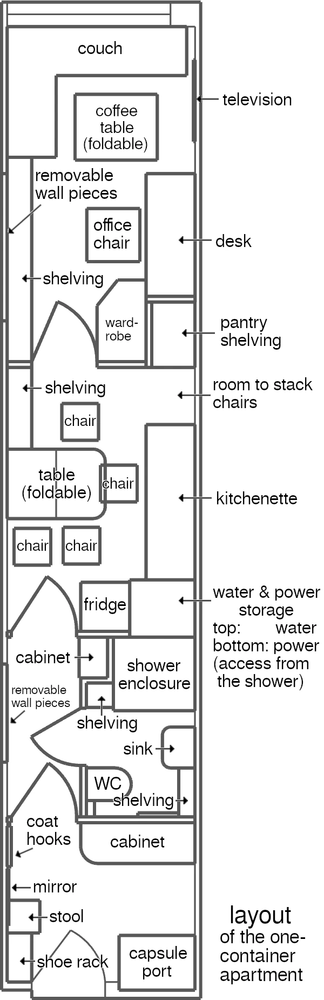
Just as with my design for a school building, the same applies to my apartment designs: I’m not an architect. But the designs are sufficient to show that at least this much is possible. Once architects from different companies compete to design the best possible apartments in this format—apartments that then go into mass production—very good solutions will be found and implemented, as dictated by the laws of a market economy.
This example apartment consists of an entryway, a small hallway, a bathroom with a shower and a toilet, an eat-in kitchen, and a combined living, working, and sleeping area.
Let’s go through the rooms one by one.
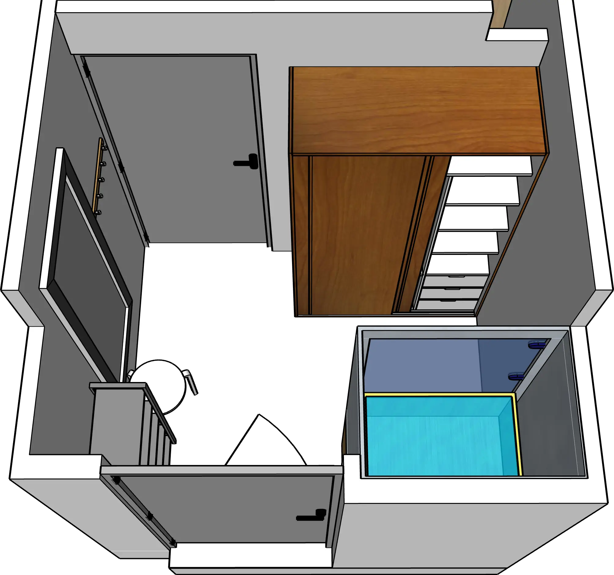
In the entryway, the capsule port (see Chapter 8.4) is located to the right of the entrance door.
Location capsule port, ventilation: The capsule port must be placed parallel to the building corridor and start 10cm in from the container edge, because this is exactly where the capsulenet shaft runs. To make room for the shaft, the ceiling is lowered by 40cm here (210cm clear height). The remaining 20cm of shaft height are part of the building’s floor slab.
Above the door there is another opening in the wall, into the capsule shaft. This opening supplies the entryway with fresh air (with ventilation slats or similar to regulate airflow and provide sound insulation). Another ventilation shaft runs from the capsule port shaft to the bathroom, along the right side under the ceiling.
Aside from that, the entryway is equipped with a shoe rack, mirror, stool, a large cabinet, and coat hooks.
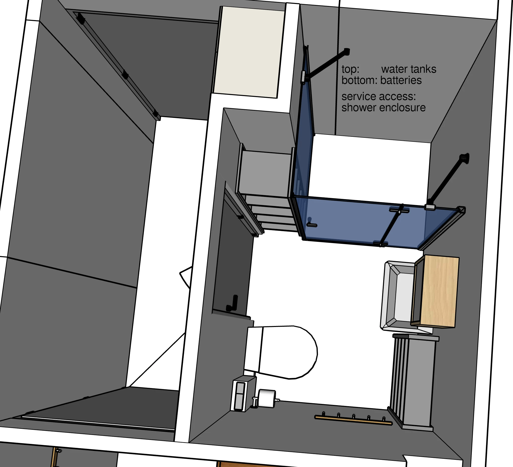
After the entryway, you enter a small hallway, with a cabinet standing in a niche. From the hallway, a door on the right leads into the bathroom. The bathroom consists of a sink with a bathroom cabinet above it, a toilet, towel hooks, a shower enclosure, and a small shelving unit.
Behind the shower enclosure is the service access to the apartment’s water and power storage. In this block between the bathroom and the kitchen, there are water tanks at the top and batteries at the bottom.
Water and power storage: This is the concrete implementation of the emergency reserve envisioned in Chapter 8.4. It’s build into the apartment design to satisfy the requirement that futurities should be resilient. When choosing which container apartment to spend your money on, you shouldn’t only make sure you get the nicest apartment possible at a good price, but also that you are as prepared for emergencies (such as a water or power outage) as is reasonably possible.
Water tanks, a few additional pipes, valves that can be controlled via the PD system, and a control element for switching the water supply: all of this can be implemented inexpensively.
Power storage, by contrast, is significantly more expensive. That’s why the block behind the bathroom simply provides space for batteries—however many the apartment’s owners want to buy. The PD system can easily integrate them into the apartment’s smart power system.
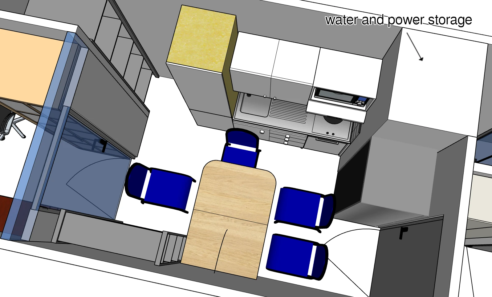
The eat-in kitchen is dominated by a table and the chairs surrounding it. The front half of this table can be folded down, turning it into a (somewhat low) countertop. Which can be folded up against the wall. The four kitchen chairs can be stacked and stored as well. Suddenly there is space in the kitchen.
To the right of the door is the refrigerator. Hidden away in the corner sits the water and power storage (not accessible from the kitchen). Next comes the kitchenette, with a sink, cooktop, dishwasher, microwave, and storage. To the left of the kitchenette there is space to store the stacked kitchen chairs. That corner contains deep pantry shelving for food. Next to the glass door, another shelving unit adds additional storage.
The door to the living room, and the wall piece above that door, are made of glass. That way, daylight from the living room can enter the kitchen.
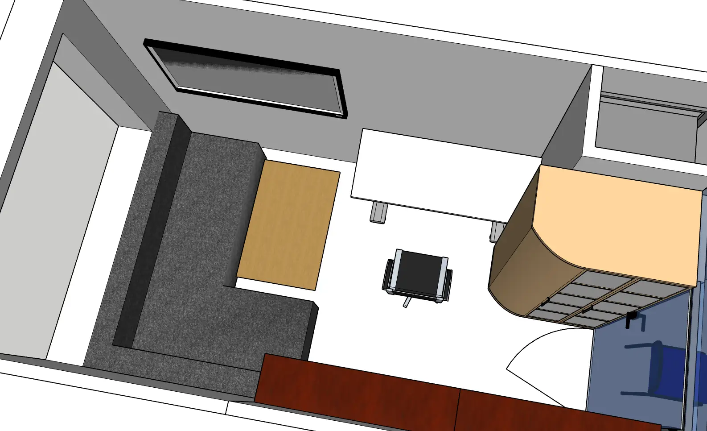
The last room in this small apartment is a combined living, working, and sleeping area. To the left of the door stands a large shelving unit, and to the right a wardrobe. On the left side of the wardrobe is a height-adjustable desk. The corner couch in front of the large window can be folded out into a bed. The coffee table in front of it folds up and can be stored between couch and wall, below the television.
Having to convert the couch into a bed every day is one of the necessary compromises in order to fit everything you need into this small apartment. 27m² is simply too little for a separate bedroom.
Overall, it is definitely possible to furnish a nice small one-person apartment in this container format. And even though only one narrow side has a (large) window, the apartment gets enough light. Only the bathroom, hallway, and entryway have no daylight, which is not a problem.
As promised, we’ll next look at an apartment combining two adjacent containers. This example should show how living space can be expanded. Just as easily, of course, three, four, or even more containers side by side are possible. For this to work, containers are always placed seamlessly right next to each other, without a building wall in between.
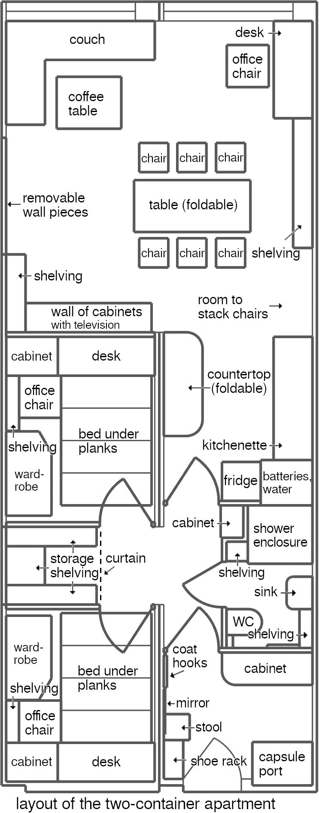
The container on the right largely corresponds to the one-container apartment we just looked at. The first difference is an opening in the hallway that leads into the second container. But first, let’s follow the door into the kitchen, which in this design is an American one—it shares a space with the living room.
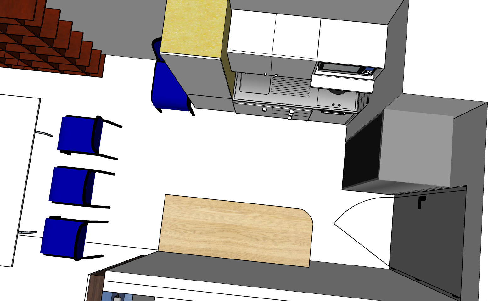
There is no table in the kitchen area. Instead, there is only a countertop that can be folded up against the wall. It is higher, since it doesn’t have to serve a second function as a table. The pantry shelving is omitted in favor of a more spacious layout—we will find storage options elsewhere.
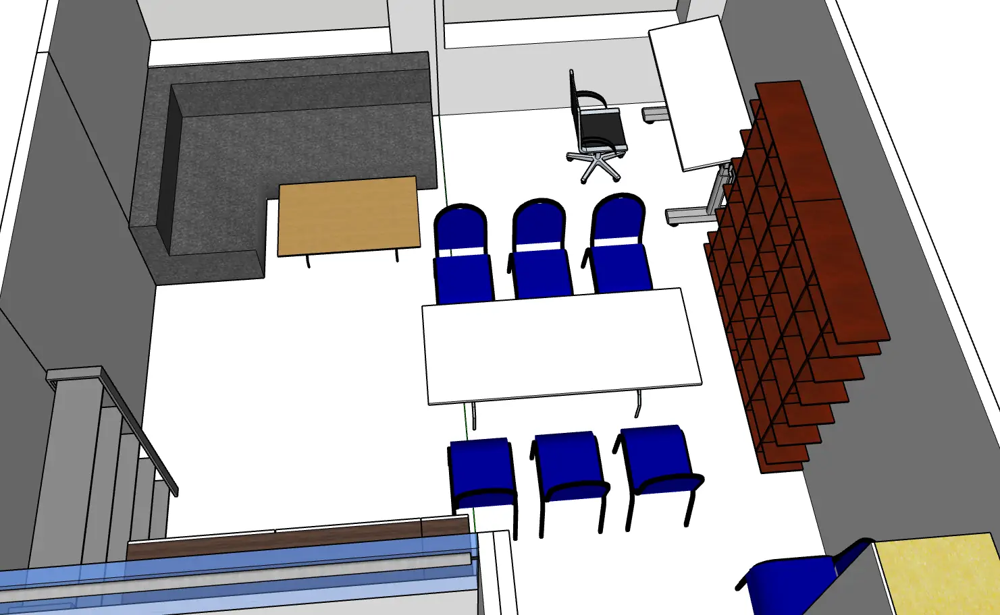
The dining area is instead located in the living room, which spans the width of both containers. At the center of the room are the dining table and six chairs. Two additional chairs are currently stacked off to the side and can be placed at the ends of the table. In total, eight people can share a meal—twice as many as in the one-container apartment. All the chairs can be stacked together, and the table can be folded up and leaned against the wall next to them. In front of the couch is the same foldable coffee table, which can also be moved out of the way. Like that, a large open area can be created in the living room as needed, usable in many different ways.
On the right wall there is a living-room shelving unit, followed by a workspace consisting of a desk and an office chair. Here too, the couch can be converted into a bed, though in this apartment it will only be necessary for guests.
Next to the couch, part of the wall is removable to allow expanding the apartment with a third container. This is followed by another shelving unit, and a wall of cabinets with a large recess for a television, opposite the corner couch.
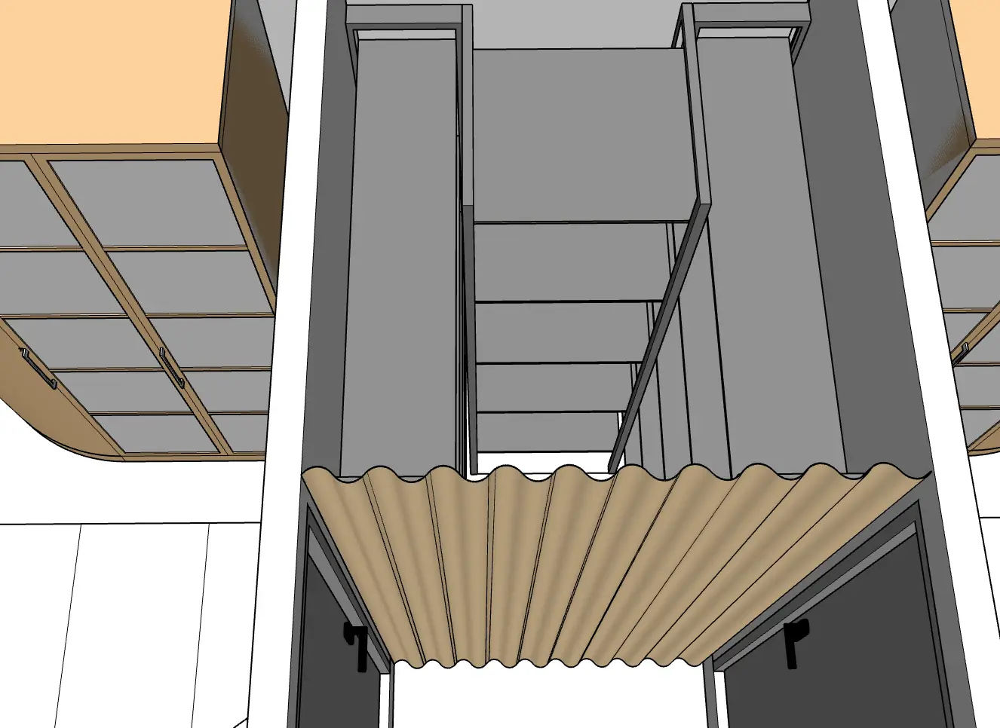
If, on the other hand, you turn left in the hallway—where in the small apartment there was only a wall—you find yourself facing a curtain that hides a small storage room. Even though it is small, it offers about 2.7 times as much storage area compared to the pantry shelving that, in the small apartment, stood in the kitchen instead.
At the end of the storage room, another removable wall piece is hidden away to enable expanding the apartment with another container (the storage shelving and curtain would be removed for that).
In front of the storage, one door on the left and one on the right each lead into nearly identical rooms. To enter them, you step up a 20cm riser.
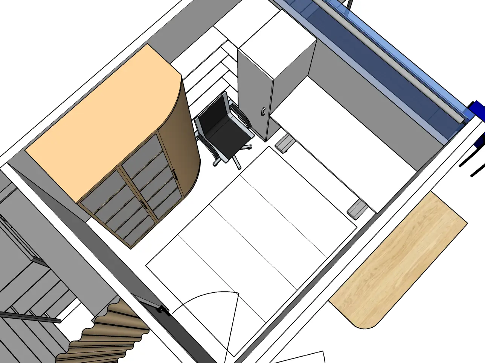
Of that pair of rooms, this is the one adjacent to the living room. Because of the riser, it has a clear height of only 2.30m (compared to 2.50m in the rest of the apartment). In the middle of the room, four panels cover a void. Together with the intermediate floor (which in this area contains no pipes or cables), the interior space of this hidden box is over 40cm high. At 200cm long and 140cm wide, this is enough space for a mattress and bedding placed on top of it.
The four panels can be stored to the left of the door, between the wardrobe and the wall.
This allows the room to serve a dual role. At night, it is a bedroom, with a large bed and a wardrobe. During the day, it is a work or hobby room, or a room for a child. With a work table, an office chair, and plenty of storage in the wardrobe and the shelving unit to the left of the desk. Thanks to the removable panels, switching between these two roles is much less work than folding a couch into a bed.
The upper part of the wall in front of the desk is made of glass. This allows a lot of light from the living room to enter. If that isn’t desired because someone wants to sleep here while the living room lights are on, the roller blind can be lowered. This glass surface can also be tilted open for ventilation through the adjacent room.
The opposite room, equipped in the same way, does not have this ceiling glass window. Instead, it has a ventilation slot (similar to the entryway). The room next to the building corridor therefore has better air, while the one adjacent to the living room has better light.
In general, the room next to the building corridor, with the ventilation slot, will more likely be used as a bedroom and thus see less use during the day. The room pictured here, with the glass window, is more likely to be used as a child's or hobby room instead, and thus benefits more often from daylight. If used as a hobby room, it can additionally double as a guest room—after all, the bed under the floor is still there.
A couple can live wonderfully in this apartment. With the two additional sleep/work/hobby rooms, one of the partners can always comfortably retreat. That wasn’t really possible in the one-person apartment.
A family with a single child can also live well in this apartment. One of the two rooms is the parents’ bedroom, the other the child’s room. Only with multiple children does expanding the living space become unavoidable (that would mean expanding with a third container).
So it really is possible to design beautiful apartments in this format! In the following, I will call buildings constructed to house such container apartments “container houses”. They contain apartment slots (spaces into which a container apartment can be inserted) that they rent out. The container apartments themselves usually belong to their residents (just as today, cars usually belong to their drivers).
How do the container apartments receive power and water from the container house? How is access to the apartment provided?
In front of the container’s entrance door is the building corridor, from which the container apartment can be entered. The capsulenet shaft above the lowered ceiling at the start of the container supplies corridor-side rooms of the container apartment with fresh air. Beneath the container’s floor there is an accessible intermediate floor and the underfloor heating. At the height of the intermediate floor, the container apartment is connected to district heating (for the underfloor heating) as well as to the building’s power, water, and wastewater networks.
Water cycle of the apartment: The apartment’s water connection consists of three lines: drinking water, non-potable water, and hot water. Hot water is provided by the building, because that is always significantly more efficient than implementing it in each individual apartment. A container house can optionally provide non-potable water. This is rainwater or other untreated water—not drinking-water quality, but good enough to shower with. If present, this line provides residents with a certain degree of emergency water supply, because it still works even if the public water network runs dry.
More important for emergency preparedness, however, is the apartment’s water and power storage (storage box). In its upper half there is a tank for non-potable water, as well as two large emergency-water tanks filled with drinking water. In the example apartments presented here, this storage box has base dimensions of 70cm × 80cm, providing about 50 liters of capacity per 10cm of height. So 300 liters per tank should be feasible, if they are meant to be that large (smaller tanks can be placed higher, making a pump unnecessary).
The two emergency-water tanks are filled and used in alternation. Using this water that is only a few days old should be unproblematic not only for the toilet but also for the shower and dishwasher. As soon as one emergency-water tank is empty, active use switches to the second, and the first is refilled. That way, there is always one full emergency-water tank with water only a few days old. In the event of a water outage, the faucets can be set to draw from this tank as well.
The emergency-water tanks are sealed so that no germs can enter, and they measure water quality via sensors. Various methods could be used to make the water in them last longer—for example, a chemical additive, or heating the empty tank before it is refilled.
Non-potable water is normally used for toilet flushing. In the event of a water outage, the shower can be switched over to it as well—either directly from the non-potable-water line or from the tank intended for it (after all, the shower head sits right next to the non-potable-water tank). This allows using non-potable water for purposes other than toilet flushing in an emergency.
Water from the shower or bathtub can be collected again and used for toilet flushing. This reuse reduces the apartment’s water consumption, and it ensures that the tanks last longer during a water outage.
Ultimately, the ability to build a sophisticated water cycle into every apartment once again comes from the container concept: each apartment model is designed once and then built many times. Together with the fact that construction then happens efficiently in a factory, this enables solutions that would not be feasible at practical costs as one-off custom builds.
What would container houses look like, into which such container apartments can be plugged?
They will be large buildings.
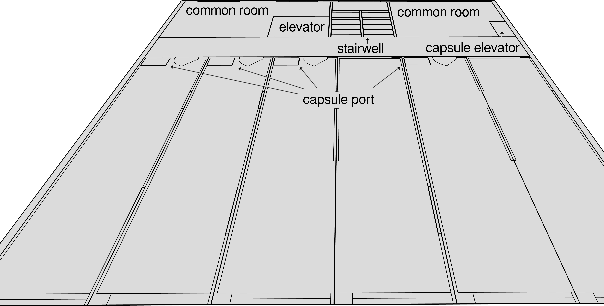
Here I have sketched a single floor of a simple container house that stands in a row of buildings and therefore has windows on only two sides of the building: at the front, on the narrow sides of the containers, and at the back, by the stairwell and the common rooms (see Chapter 8.1). This makes it one of the smallest container houses imaginable. In the next subchapter, we will look at a much larger container house. This example is meant to show that integration into existing cities is entirely feasible (as long as the buildings have at least the minimum depth required for this, and the street in front of the building is wide enough).
In this example, two one-container apartments and two two-container apartments are inserted. Of course, any other combination of apartment sizes is possible.
If an apartment slot is currently unoccupied, the narrow container sides must be covered. I would suggest doing this using wall pieces that fold up, similar to garage doors. If they are electronically controlled, no one has to climb into empty apartment slots just to open or close the cover on the building’s exterior wall.
Where the apartment slots are occupied, the narrow sides of the containers themselves serve as the building’s exterior wall, or respectively as the wall to the building corridor. Since the containers were produced at different times and by different manufacturers, the colors of the house and corridor walls will therefore be a patchwork. Requiring exactly one color and pattern for the narrow container sides seems too monotonous to me—if it would even be followed. Either you make peace with that look because it’s simply the most efficient (just as we have made peace with functional design, without the flourishes household items used to have). Or you give container apartments interchangeable outer shells (just as many smartphones today have interchangeable backs). All that would be needed are mounting points provided for this purpose on the outside of the containers. Then accessory companies could offer matching decorative panels in different colors and materials.
On the building corridor side, that would be easy enough to attach. On the exterior wall, by contrast, it would have to be done through the window, without anyone having to lean out dangerously far. I don’t yet know how, but if you want it, a technical solution will surely be found for that as well.
Such a protective layer on the exterior wall would have the additional advantage of protecting the rest of the container from the weather and thus increasing its longevity (since the weathered decoration can easily be replaced).
What might a relocation look like in practice, if you live in the two-container apartment I presented?
First, the new container house at the destination is searched for and found—online research, phone calls, emails. Since the new place is only 200km away, there is also an on-site visit to take a look around. Unlike before, it will be a high-rise. Once the apartment slot in the new container house has been reserved, everything else is organized. Work, school, daycare—those things obviously have to be settled.
This move will happen entirely by road. A combination with rail or ship would follow the same principle.
For moving day, two semi-trucks are rented, and for the starting location an apartment lifter—a specialized crane vehicle that, in this futurity, can be rented in any city to relocate apartments.
On the evening before the move and on the morning of moving day, dishes and other breakables are packed up, and the doors of all furniture are secured. Since these apartments are designed to move this way, all pieces of furniture have such latches—which also serve as child locks.
In addition, the missing wall pieces stored in the intermediate floor are reinstalled, and the connections to the building’s power, district heating, and water supply are disconnected. Once the apartment lifter and the semi-trucks have arrived, the last step is to release the containers’ anchoring in the building.
From outside, the residents now watch as the apartment lifter’s crane pulls the first of the two containers out of the building. The container rests on building-mounted rails, comparable to a computer server in a server rack.
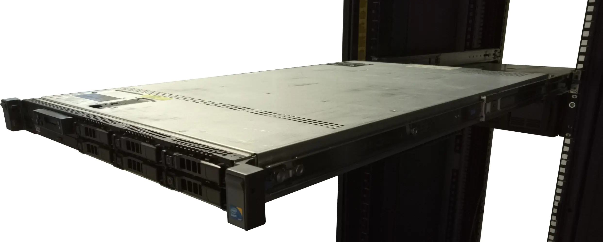
Then the apartment lifter lifts the container off the rails and onto the flatbed trailer of the semi-truck. The same is repeated for the second container and the second semi-truck. Since our residents don’t have their own car and the trip isn’t very long, they ride along in the passenger seats of the semi-trucks. Alternatively, they could have followed in their own car or taken the train to the destination.
After about three hours, the semi-trucks arrive at the destination. The high-rise, in which two empty apartment slots have been rented, has prepared by folding the wall pieces up to the ceiling and extending the rails. The high-rise has a permanently installed apartment lifter on its roof, which lifts one container after another onto the extended rails and then pushes it into the building.
Now the container apartment can be entered and anchored. Power, district heating, water, and wastewater are connected to the building, the wall pieces are removed and stored. The dishes can be unpacked again, and the cabinets unlocked.
This completes the entire move in a single day without major stress, and the same apartment can be used in full at its new location.
Review of Requirements
|
Requirement |
Features of this Futurity |
|
low demands on people’s character |
• container apartments used out of self-interest (price-to-performance ratio) • Classic apartments still exist |
|
no world government |
• container standard already exists • container apartment standard becomes established when a country implements it |
|
costs considered |
• It is cheaper than the existing system (comparison handmade clothing) |
|
automatic adaptation to a changing world |
• The housing market can much more easily adapt to changing requirements (e.g., required apartment sizes) |
|
help citizens keep up with change |
• Moving and changing apartments is much easier |
|
promote technological development |
• Apartments in a building can be replaced individually |
|
resilience to withstand adversity |
• power and water storage • more efficient water use |